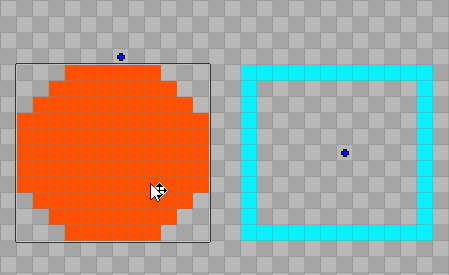
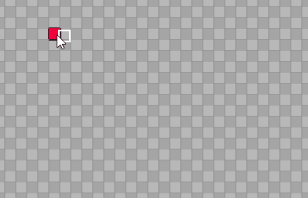
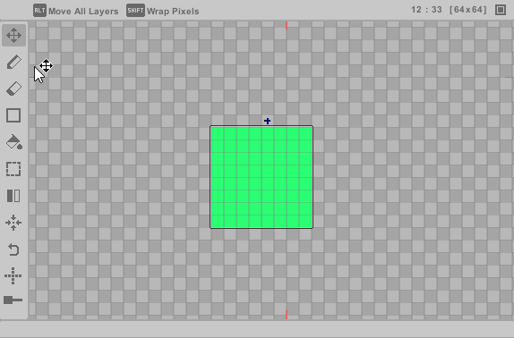

Select, Move
To modify your pixel content, first select a layer by left-clicking inside its content boundary. Once selected, you can drag anywhere to reposition the layer content. The drag operation will also apply to any child layers of the parent layer.
Tips
- Hold Shift while dragging to move all layers at once for bulk adjustments.
- Hold Alt while dragging to wrap pixels that cross over the canvas boundary.
Quick Move
Use screen handles (blue cross) to move layers efficiently without switching from the current layer. When a layer is selected, it is highlighted in yellow for clarity. Quick Move remains available in Pencil mode, and it can be enabled in Preferences > General.

Pencil
The primary tool for painting pixels directly onto the current layer. Use left-click to paint, with three brush modes: Circle, Rectangle, and Line. Brush thickness is adjustable from 1 to 32 pixels. When active, the Tool Infobar displays brush selection and size controls.
This tool also includes several efficiency-focused features that make quick edits smoother, reducing the need for frequent tool switching.
Move A Group Of Pixels
- Hold Shift + left-click and drag to select an area.
- Release mouse to confirm selection.
- Left-click elsewhere to reposition the pixels.

Move Single Pixel
- Hold Shift + left-click on a single pixel.
- Left-click elsewhere to reposition the pixel.

Contour
- Hold Ctrl while drawing your shape.
- Release mouse to automatically fill the interior.

Mask
- Hold Alt while painting to only affect areas with existing pixels.

Shortcuts Workflow
The Pencil is designed to minimize tool switching through shortcuts. Please visit the Shortcuts section to view the key mappings.
- Quick Delete: shortcut to instantly erase a pixel.
- Eyedropper: shortcut to quickly sample any color from the canvas.
- Frame Navigation: shortcuts to switch between previous and next frames.
- Layer Movement: right-click to select and move layers.
Erase
Left-click to remove pixels from the current layer. Current brush thickness is applied.
Shapes
Create standard shapes including Lines, Rectangles, and Circles in various sizes. Left-click and drag to generate a new shape. Current brush thickness is applied.
Tip:
- Hold Shift while dragging to produce outline-only shapes.
- Hold Alt while dragging to wrap pixels that cross over the canvas boundary.

Paint Bucket
Fills enclosed areas on the current layer with your selected color.
Tips
- Hold Shift to replace a color across all layer.
- Hold Control to replace a color across all layers.
- Hold Alt to replace a color across all frames.
- When editing a color palette, using Paint Bucket on a palette color updates all instances of that color across the entire file (all layers and frames).
Marquee Select
Select and transform pixel areas using move, stretch, rotate, or delete actions on the current layer. Press the shortcut key to cycle through all selection modes.
Rectangle
- Drag to select a rectangular area. Or double-click to quick select the entire layer.
- Release mouse to complete.
Circle
- Drag to select a circular area.
- Release mouse to complete.
Lasso
- Freely draw around pixels to select.
- Release mouse to complete.
Polygon
- Click to place vertices.
- Close the shape to complete.
Magic Wand
- Hold Shift to select all connected pixels of the same color.
- Select indefinitely.
- Release Shift to complete.
When Selection Is Complete
- Transform selection (move, stretch, rotate).
- Ctrl+V to paste if necessary.
-
Finalize:
- Left-click outside selection area to apply.
- Press Delete to remove.
-
Or right-click selection to open context menu.
- Finalize:
- Send selected area to new Layer.
- Send selected area to new Pixelfile ("New File Cropped").
Transform Controls
- Move: left-click + drag inside the selection.
- Stretch: drag edge handles.
- Rotate: rotate green handle (circles around pivot).
- Pivot: left-click + drag to reposition.
Tip:
Selected pixels can be rotated and flipped mid-transform using the Rotate and Flip tools.

Flip
Flip pixels in the current layer within the content boundary. This will affect child layers.
- Horizontal Flip: mirror across vertical boundary axis.
- Vertical Flip: mirror across horizontal boundary axis.
- Canvas Flip: mirror all layers across canvas y-axis.
Center Pixels
Instantly center layer contents within the canvas center. This will affect child layers.
- Full Center: align to both horizontal and vertical axes (default).
- Axis-Specific: center only horizontally or vertically.
Rotate
Rotate the layer by 90 degrees counter-clockwise. This will affect child layers.
Symmetry
Mirror painting in real-time.
- Horizontal: left/right mirroring.
- Vertical: up/down mirroring.
- Diagonal: x/y cross mirroring.
Tip:
For horizontal/vertical axes, drag on-screen handles to offset center points.
Onion
Preview adjacent animation frames as semi-transparent overlays.
- Drag the onion slider to adjust opacity (lowest value disables skins).
- While hovering the slider:
- Toggle next/previous onion visibility
- Enable red/blue tinting for skins